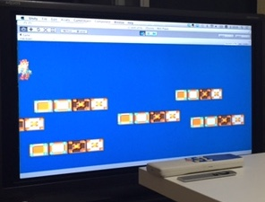
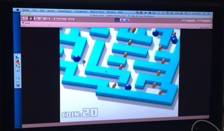

Unity Suddendeathon ♯2でした
概要
即死ゲームをつくろう！ みたいなサドンデスゲームジャムやってた。
6時間で即死ゲーム一本を作ろう的な。
即死の世界
@tori_kizi さんの落下即死ゲー。

見た目全く同じですり抜けるブロックがえぐい。
@tsubaki_t1 さんの迷路即死ゲー。

いろんな種類の「プレイヤーを追って殺す」のがあってよいなーと思った。
ワイの。
落下させて殺すゲー。
タイムオーバーで未完成だったんで禁断の延長戦やった、、、
得た知見
それぞれ発表したあとに、「ここはこうやったッス」とか「この辺にクソみたいなこだわりが」とかやると大変面白かった。
楽屋時間みたいなものを今後は予定に入れてやってみようと思う。